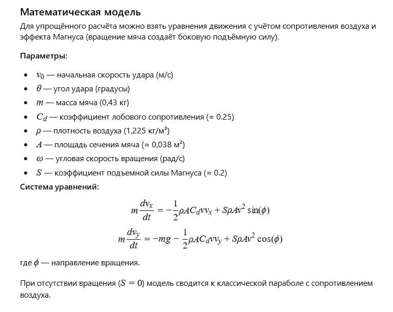

Автор: ШІ
Старий футбольний м’яч обережно торкався підлоги та двох стін у кутку роздягальні й сумував. Він згадував свою молодість. Пам’ятав, як птахи на проводах біля стадіону захоплено спостерігали за його піруетами й говорили одне одному: «Я б так не змогла». Колись він літав так високо, що на мить бачив усе місто: блиск річки, ряди дахів, зелені квадрати дворів. Він відчував, як повітря обіймає його з усіх боків, і чув гуркіт трибун — гуркіт, у якому були радість, страх і очікування дива. Тепер він лежав у тиші. Іноді двері роздягальні приоткривалися, і повз проходили молоді гравці. Вони приносили нові м’ячі — гладкі, блискучі, що пахли гумою і свіжою фарбою. Старий м’яч знав: їх чекали тисячі ударів і сотні голів. А він… він вже був музеєм спогадів лише для себе. Але він вірив: одного дня хтось підніме його, стряхне пил і кине в повітря. І тоді, хоча б на секунду, він знову відчує себе птахом.
Як математично описати політ футбольного м’яча, враховуючи силу удару, кут, опір повітря та обертання?
